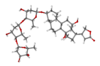

digoxin

Definition: Digoxin (better known as Digitalis), sold under the brand name Lanoxin among others, is a medication used to treat various heart conditions. Most frequently it is used for atrial fibrillation, atrial flutter, and heart failure. Digoxin is one of the oldest medications used in the field of cardiology. It works by increasing myocardial contractility, increasing stroke volume and blood pressure, reducing heart rate, and somewhat extending the time frame of the contraction. Digoxin is taken by mouth or by injection into a vein. Digoxin has a half life of approximately 36 hours given at average doses in patients with normal renal function. It is excreted mostly unchanged in the urine.
Source: Wikipedia
Wikipedia Page
Wikidata Page